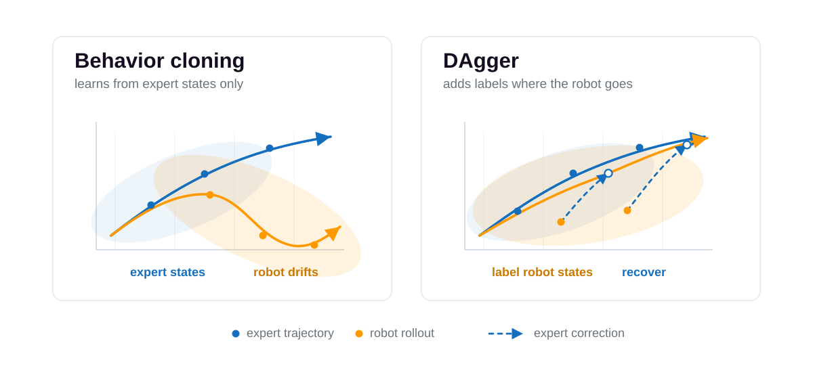
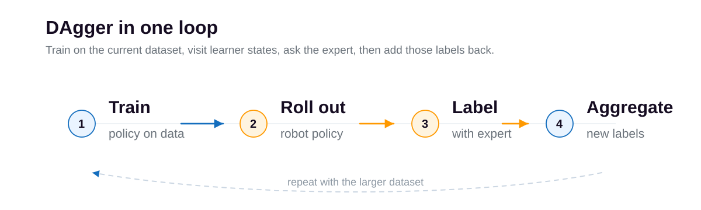

Lessons from Imitation Learning
Imitation learning is often introduced as a simple idea: collect demonstrations, train a policy, and run it on the robot. In practice, the hard part is not only the model. The hard part is making the data, observations, actions, and evaluation match the real failure modes of the task. This note is mostly about behavior cloning and DAgger, with the classic robot learning-from-demonstration literature in the background.
The basic objective
The simplest form is behavior cloning. Given expert demonstrations $\mathcal{D}_E = \{(o_i, a_i^E)\}_{i=1}^N$, we train a policy to predict the expert action from the observation:
For deterministic continuous-control policies, this often becomes a regression loss:
This objective is clean, but it hides the main difficulty: the loss is measured on expert states, while the robot will eventually visit states induced by its own policy. Early neural behavior cloning systems such as ALVINN already showed how powerful direct demonstration-to-action learning can be [Pomerleau, 1989], and the broader robot learning-from-demonstration literature frames this as learning a policy from example state-action mappings [Argall et al., 2009].

Data quality matters more than data count
More demonstrations help, but only when they cover the decisions the robot will actually face. A small dataset with clean recoveries, varied initial states, and meaningful contacts can be more useful than a large dataset of near-identical successful rollouts.
For manipulation, this matters a lot. The policy needs to know what to do when an object shifts, when a grasp is slightly off, or when contact appears earlier than expected. If these moments are missing from the data, the model may look strong in replay and still fail quickly on hardware. But my understanding is only come from small data regime. I don't know if we already have a large distribution cover, what will happen.
Covariate shift is the real enemy
The robot does not stay on the demonstration distribution for long. A tiny action error can move the next observation into a state the demonstrator never visited. This is why recovery behavior is not optional. It is the difference between a policy that can finish a task and one that only works when everything goes perfectly.
Here $d_{\pi_E}$ is the expert's state distribution and $d_{\pi_\theta}$ is the learner's state distribution. Even if the policy has a small one-step error $\epsilon$ on expert states, those errors can compound over a horizon $T$. This train-test mismatch was formalized in interactive reductions for imitation learning [Ross and Bagnell, 2010] and then sharpened into DAgger [Ross et al., 2011]:
This is the reason I care about recoveries. A policy that only matches the expert around the nominal trajectory may have no useful action once it drifts away from that trajectory.
Recovery data is a form of distribution matching
One way to view DAgger-style training is that the dataset should include states produced by the current learner, not just states from the original expert rollouts [Ross et al., 2011]:
In robotics, I do not think of this only as an algorithmic trick. It is a practical data-collection principle: put the robot in the states it will actually reach, then label what recovery should look like.

Several useful variants change how the learner gets corrective data. Deeply AggreVaTeD makes the value-sensitive version differentiable for neural policies [Sun et al., 2017]. DART avoids fully on-policy querying by injecting noise into the supervisor, creating recovery examples around the expert distribution [Laskey et al., 2017]. HG-DAgger adapts the idea to human-gated supervision, where safety and label quality matter during real robot or driving rollouts [Kelly et al., 2019].
Representation decides what the policy can learn
Imitation learning is limited by what the policy can observe and express. In contact-rich tasks, vision alone can miss forces, slip, and object constraints. Tactile and proprioceptive signals are not just extra modalities; they often reveal the state that determines the next correct action.
But adding a new observation is not automatically helpful. A new modality can introduce its own distribution shift. For example, two frames may look visually identical while the hand is experiencing very different contact forces. If the dataset does not cover those force conditions, the policy may now fail in a higher-dimensional observation space instead of a lower-dimensional one.
This is also what I learned from our visuo-tactile manipulation papers. In 3DTacDex, simply attaching 3D tactile observations to the policy was not enough; the tactile signal needed a canonical representation and force-aware pretraining before it became useful for policy learning [Wu et al., 2025]. In AdapTac-Dex, the fusion itself had to be adaptive: the policy should use tactile feedback when contact information matters, not blindly trust every modality at every timestep [Li et al., 2025]. The lesson is that tactile sensing helps only when the representation and fusion mechanism make the added signal policy-relevant; naive multimodal input can make the policy worse.
This pushes me toward a more careful question: when should a new modality be introduced? If it is added too early, the whole pretraining pipeline must support that sensor. If it is added too late, the policy must adapt to a new observation channel without forgetting old behaviors or overfitting a small multisensory dataset. MuSe takes this post-pretraining view: start from a vision-action policy, then adapt it with limited force-torque data through multisensory prediction, staged fusion, and replay [Clark et al., 2026]. For me, this reframes force or tactile feedback as a capability to be introduced when contact ambiguity becomes the bottleneck, not as a default input that should always be concatenated.
CR-DAgger gives a complementary answer from the correction side. Instead of retraining the whole policy or naively finetuning it after failures, it collects smooth on-policy delta corrections through a compliant intervention interface, then learns a residual policy that uses force feedback and force control [Xu et al., 2025]. This suggests a useful design rule: add the new modality at the stage where it can explain the policy's real failure mode. For force, that may be during post-training correction or runtime compliance, not necessarily during the first round of visual imitation learning.
Another takeaway is that the base policy does not have to come from behavior cloning. It can come from large-scale visuomotor pretraining, reinforcement learning, a vision-language-action model, or even a structured controller. Even when BC is used, it may only be a warm-up: a way to get a reasonable policy into the task distribution, not the final learning objective. A good base policy should be easy to steer. It should expose enough structure that a small amount of correction data, force or tactile feedback, or a residual policy can move it toward the right behavior. In that setting, imitation learning is not always the method that builds the entire policy from scratch. It can also be the method that tells an existing policy where it is wrong, what signal it is missing, and how to correct itself.
This makes the representation question practical rather than philosophical: add a modality when it resolves ambiguity that matters for action, and verify that the dataset covers the new variation it exposes. Otherwise, the extra signal can make the policy appear more informed while actually increasing the number of out-of-distribution states it must handle.
The same is true for actions. A low-level action space may offer precision, while a higher-level action space may make long-horizon behavior easier to learn. The best choice depends on where the task complexity lives.
Evaluation should test recovery
A policy should not only be evaluated from easy starts. I care more about whether it can recover from small mistakes, tolerate object variation, and remain stable when contact is noisy. These tests expose whether the policy learned the task or only memorized a narrow execution path.
Where this fits
Behavior cloning is only one corner of imitation learning. Inverse reinforcement learning and apprenticeship learning try to infer what reward or preference explains the expert behavior [Abbeel and Ng, 2004]. Later adversarial approaches such as GAIL turn imitation into occupancy matching between expert and learner trajectories [Ho and Ermon, 2016]. For contact-rich robot learning, I still find the behavior-cloning question unavoidable: what states are in the dataset, and can the policy recover when it leaves the nominal path?
My current takeaway
Imitation learning works best when we treat it as a systems problem. The model is one part of the stack, but the dataset, sensing, action representation, and evaluation protocol are equally important. For robotics, the lesson is simple: collect data for the moments where the robot is likely to fail, not only the moments where the expert looks good.
Questions for the next stage
At this point, I do not think the field is missing the fact that imitation learning is a systems problem. Many current works already make strong local choices and fit a particular setting well: a task, a robot, a sensor suite, a correction interface, or a deployment constraint. The harder question is whether we can study this design space in a more principled way, instead of rebuilding a new pipeline for every contact-rich task.
- When should a new modality enter the policy: pretraining, finetuning, residual correction, or runtime feedback?
- What makes a base policy easy to steer, and how do we measure steerability before deployment?
- When a policy fails, should the next intervention be more data, a new sensor, a better representation, a different action space, or a correction policy?
- How should evaluation compare whole systems, not only models: data collection, modality choice, adaptation, safety, and recovery?
- Can we build methods that actively explore the system design space, rather than relying on each paper to choose one local configuration?
This is the direction I find most interesting. Imitation learning may already be mature enough that the next progress is not only a better loss or a larger dataset. It may come from a better way to probe the robot learning system itself: where it is brittle, what signal it needs, when that signal should be added, and how a base policy can be corrected without losing what it already knows.
These thoughts are still not fully mature. I am writing them down mostly as a working note, both to organize my own thinking and to share the questions I currently care about. If you disagree, see a gap, or think I am missing something important, I would be happy to discuss it and learn where this framing is wrong.
References
- (1989). ALVINN: An Autonomous Land Vehicle In a Neural Network. NeurIPS. Paper
- (2009). A survey of robot learning from demonstration. Robotics and Autonomous Systems, 57(5), 469-483. Paper
- (2010). Efficient Reductions for Imitation Learning. AISTATS, PMLR 9, 661-668. Paper
- (2011). A Reduction of Imitation Learning and Structured Prediction to No-Regret Online Learning. AISTATS, PMLR 15, 627-635. Paper
- (2017). Deeply AggreVaTeD: Differentiable Imitation Learning for Sequential Prediction. ICML, PMLR 70, 3309-3318. Paper
- (2017). DART: Noise Injection for Robust Imitation Learning. CoRL, PMLR 78, 143-156. Paper
- (2019). HG-DAgger: Interactive Imitation Learning with Human Experts. ICRA, 8077-8083. Paper
- (2025). Canonical Representation and Force-Based Pretraining of 3D Tactile for Dexterous Visuo-Tactile Policy Learning. ICRA. Paper
- (2025). AdapTac-Dex: Adaptive Visuo-Tactile Fusion with Predictive Force Attention for Dexterous Manipulation. IROS. Paper
- (2026). Multisensory Continual Learning: Adapting Pretrained Visuomotor Policies to Force. arXiv preprint arXiv:2606.30988. Paper
- (2025). Compliant Residual DAgger: Improving Real-World Contact-Rich Manipulation with Human Corrections. NeurIPS. Paper
- (2004). Apprenticeship Learning via Inverse Reinforcement Learning. ICML. Paper
- (2016). Generative Adversarial Imitation Learning. NeurIPS. Paper